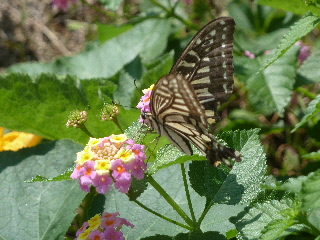
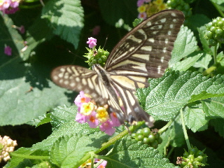
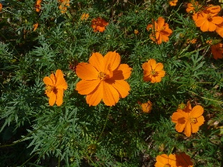
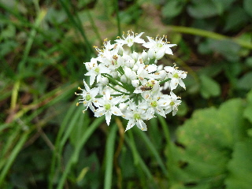

遊びで植物を育てよう
2015/09/27
秋のアゲハ蝶は元気がなさそう。
アゲハ蝶の写真を撮りました。

夏だったらきっと近づいたら逃げてたと思うんですが、動きが小さかったので楽に写真が撮れました。

なんとなく、蝶の色が薄い気がする。
【9月TOP】
【日記TOP】
【園芸TOP】
2015/09/27
コスモスは白とかピンクがいいかな。
うちのコスモスはオレンジ色です。

綺麗なんですが、コスモスは白とピンクがいいかなーって最近思うようになりました。
年取ったかな。
【9月TOP】
【日記TOP】
【園芸TOP】
2015/09/12
ニラの花は鑑賞できますね。
畑でとっても目立っていました。

園芸の花みたいに綺麗です。
こんな花さくなら、もっと沢山植えようかな。
【9月TOP】
【日記TOP】
【園芸TOP】
過去の日記
【2024年9月の日記】
【2023年9月の日記】
【2022年9月の日記】
【2021年9月の日記】
【2020年9月の日記】
【2019年9月の日記】
【2018年9月の日記】
【2017年9月の日記】
【2016年9月の日記】
【2015年9月の日記】
【2014年9月の日記】
【2013年9月の日記】
【2012年9月の日記】
【9月TOP】
【日記TOP】
【園芸TOP】
畑仕事じゃないよ。
【おいしいものを食べよう。】【しっかり寝よう。】
【ソロ活をしよう!】【季節感のあることをしよう。】【動画視聴はほどほどに。】【当サイトの全てのコンテンツは無断転載禁止です。】